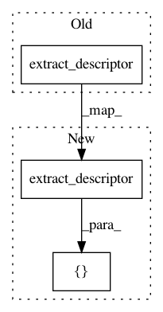

29207539638be76123e2b9db9fd7cf54ee77c898,tests/test_bayesian.py,,test_gpr,#,12
Before Change
gpr.first_fit([Graph(get_add_skip_model()).extract_descriptor()], [0.5])
assert gpr.first_fitted
gpr.incremental_fit(Graph(get_concat_skip_model()).extract_descriptor(), 0.6)
assert abs(gpr.predict(np.array([Graph(get_concat_skip_model()).extract_descriptor()]))[0] - 0.6) < 1e-4
After Change
gpr.first_fit([Graph(get_add_skip_model()).extract_descriptor()], [0.5])
assert gpr.first_fitted
gpr.incremental_fit([Graph(get_concat_skip_model()).extract_descriptor()], [0.6])
assert abs(gpr.predict(np.array([Graph(get_concat_skip_model()).extract_descriptor()]))[0] - 0.6) < 1e-4
In pattern: SUPERPATTERN
Frequency: 3
Non-data size: 3
Instances
Project Name: keras-team/autokeras
Commit Name: 29207539638be76123e2b9db9fd7cf54ee77c898
Time: 2018-05-25
Author: jin@tamu.edu
File Name: tests/test_bayesian.py
Class Name:
Method Name: test_gpr
Project Name: keras-team/autokeras
Commit Name: 4b83c1070cebd0d996ba2cc69779dcb66d5d0032
Time: 2018-05-29
Author: jhfjhfj1@gmail.com
File Name: tests/test_bayesian.py
Class Name:
Method Name: test_gpr
Project Name: keras-team/autokeras
Commit Name: a8eabdad14eee8a47257248fa271700fcce939cb
Time: 2018-05-01
Author: jhfjhfj1@gmail.com
File Name: tests/test_bayesian.py
Class Name:
Method Name: test_gpr